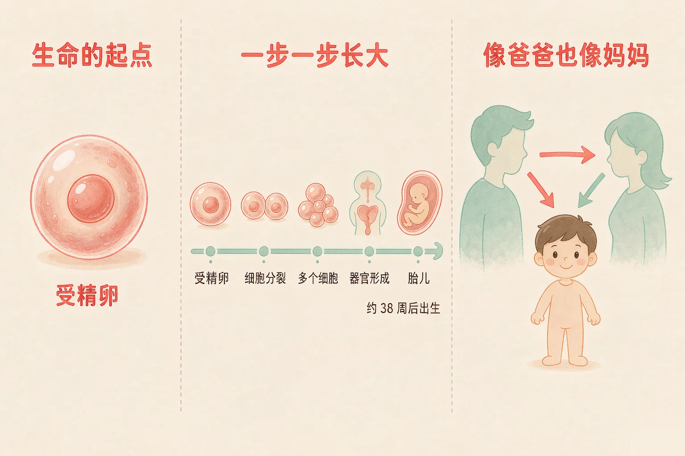
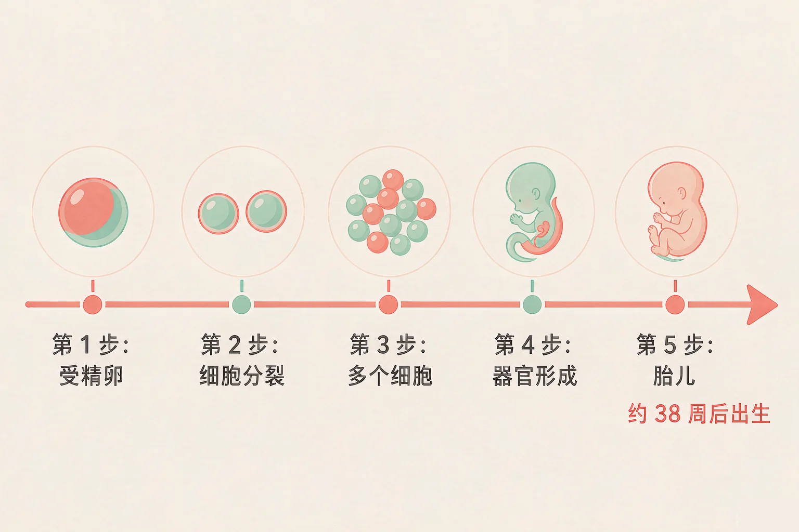
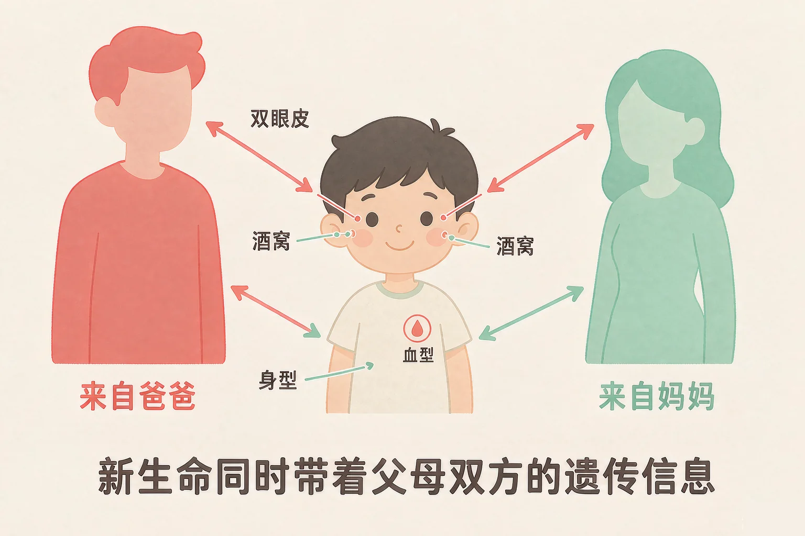

小学六年级 · 生命科学 · 生命的延续
我从哪里来？一个小生命是怎样一点点长成的？

选一个你真正好奇的问题，后面的时间轴和配对游戏都会围着它转。
选择或输入后，这节课会围绕你的问题展开。
先凭直觉选一个，选完立刻看到解释——错了也没关系，正好知道要重点听哪里。
1. 人的生命是从哪里开始的？
生命从一个受精卵开始，出生之前已经在妈妈身体里生长了九个多月。错因提醒：常见错误是误认为生命从出生才开始的，把出生当成了起点。
2. 一个小宝宝在妈妈身体里大约住多久才出生？
从受精卵到出生，大约要经过 38 周。错因提醒：把 38 周和 38 天搞混是这一课最容易出现的错误，九个多月可不短。
3. 为什么我们和家人既像又不像？
每个特征都由父母双方的遗传信息一起决定，哪一份影响更明显，就更像谁。这一题先记在心里。
你已经知道，除病毒外的生物体都是由细胞构成的。那么我们每一个人的生命，最开始是什么样子？答案是：一个细胞。
起点：受精卵
爸爸和妈妈各提供一份遗传信息，结合在一起，形成一个新的细胞，叫做受精卵。
发育：分裂与生长
细胞不断分裂、逐渐分化，慢慢长出各种器官，最后发育成胎儿。

🔍 深层理解 换个角度再看一遍这件事，看看能不能说出背后的原理。
解释它：为什么说一个细胞就能长成一个人？因为细胞会不断分裂，让数目变多，还会逐渐分化，长成心脏、大脑这些不同的器官。
比较它：比起上一课认识的草履虫，我们的起点也是一个细胞；不同的是我们的细胞会分工，最后组成完整的身体。
迁移它：其他动物也大多从受精卵开始发育，只不过时间长短不同——小鸡大约 21 天，小狗大约 60 天。
拖动滑块，或者直接点下面的站点按钮，看看小生命在每一站是什么样子。
你一定听大人说过：眼睛像妈妈，鼻子像爸爸。为什么会这样？因为新生命身上，同时带着爸爸妈妈双方的遗传信息。
每个特征都由两份信息一起决定
双眼皮、酒窝、血型、耳垂的形状，都不是只听一个人的。
哪份更明显，就像谁
有的特征爸爸那份影响更明显，有的特征妈妈那份更明显，还有的可能像爷爷奶奶。

不要误认为长得像爸爸的特征就只来自爸爸。每个遗传特征都由父母双方的信息一起决定；也不要误认为孩子是把爸爸妈妈的各部分各拼一半。要区分更像谁和只来自谁这两件事——两份信息组合起来，才形成了独一无二的你。
先点一张特征卡片，再点你认为正确的筐。放完六张，看看你会有什么发现。
点一张卡片开始归类。
题目：小丽的弟弟眼睛像妈妈，鼻子却像爸爸。有人说，弟弟一半像妈妈、一半像爸爸，是这样吗？请说明理由。
先凭直觉选一个，选完立刻看到解释——错了也没关系，正好知道要重点听哪里。
1. 下面关于人的生命开始的描述，哪一句是正确的？
在出生之前，人已经在妈妈身体里生长发育了大约 38 周。错因提醒：最常见错误是误认为出生才是生命的起点，把出生和起点搞混了。
2. 受精卵能长成一个完整的人，最主要的原因是：
数目靠分裂变多，器官靠分化形成，两者一起完成了发育。错因提醒：误认为只要细胞变大就行的同学，忽略了细胞分裂和分化这两个关键过程。
3. 小华的耳朵形状很像爷爷，这可能吗？
遗传信息来自父母，其中也带着更早一辈的信息，所以像爷爷奶奶是很常见的。错因提醒：把长相随谁误认为由住在一起决定，是常见的错误想法。
请用三句话，讲给一年级的小朋友听。写完以后，用下面的清单检查一下自己讲清楚了没有。
我的三句话
自评清单（点一点，看看自己做到几条）
还没点任何一条，先看看自己的三句话里有没有说清楚。
先凭直觉选一个，选完立刻看到解释——错了也没关系，正好知道要重点听哪里。
1. 从受精卵到胎儿，身体里细胞的变化是：
发育的过程就是细胞分裂让数目变多，细胞分化让不同器官形成。
2. 关于每一个生命的来历，下面哪句话最合适？
从受精卵到出生要经过九个多月，妈妈付出了很多辛苦。懂得生命的来历，就应该尊重和珍惜每一个生命。
3. 姐姐和妹妹是双胞胎，可她们的长相还是有细微差别。最合理的原因是：
即使是双胞胎，各自得到的遗传信息组合也不完全一样，再加上后天环境的影响，长相就会有差别。
回到你最想问的那个问题：我是从哪里来的？你是爸爸妈妈的遗传信息结合在一起，从一个细胞开始，一点一点长出来的。这九个多月里，妈妈一直陪着你、照顾你——每一个生命，都来得不容易。
讲给同桌听：请用"受精卵、细胞分裂、38 周、遗传信息"这四个词，说说你从哪里来。
三层练习，做完第一、二层就算通关；第三层留给愿意继续探索的同学。
⭐ 基础巩固（必做）
⭐⭐ 能力应用（必做）
⭐⭐⭐ 迁移挑战（选做）
左边是学它之前要先会的，右边是学会之后可以继续探索的，下面是同一领域的伙伴知识。